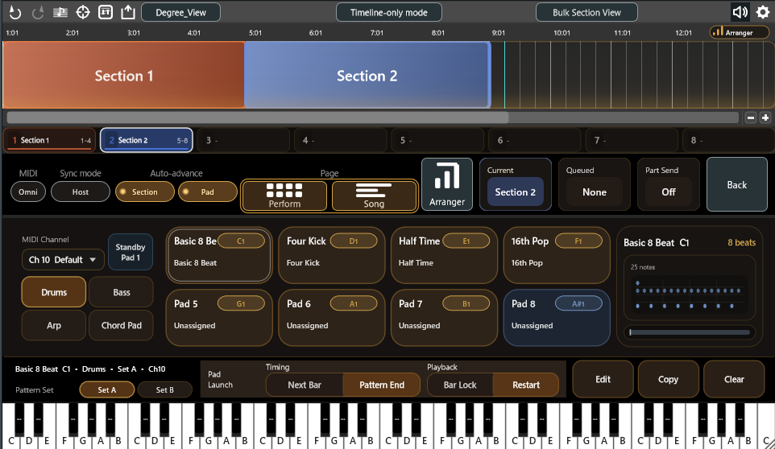
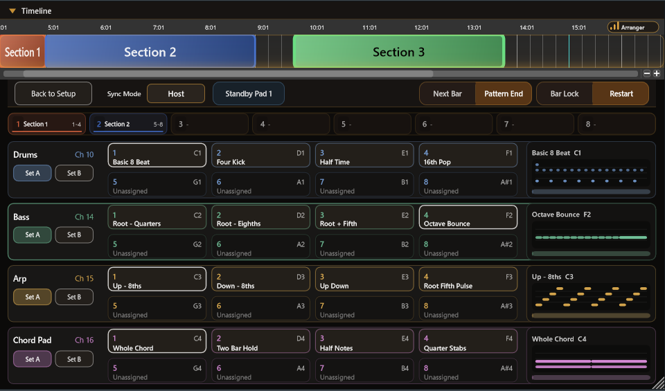
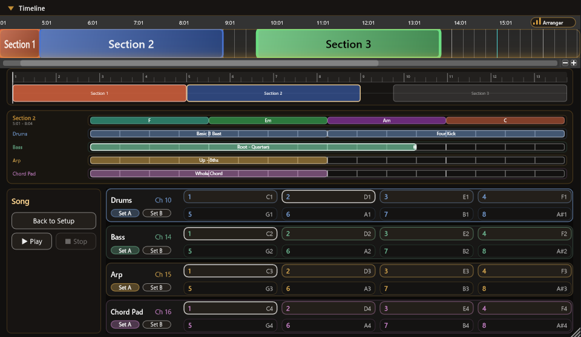
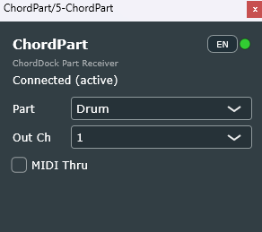
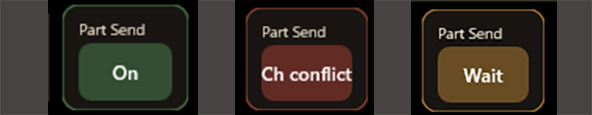

Feature Tour

Draft quickly with the timeline
Drag/move/resize to build progressions intuitively. Snap to bars/beats, transpose and invert instantly. Shorten your loop: edit → audition → drag MIDI.
Compare Reharmo candidates before you apply them
Compare candidates and preview changes without destroying the original progression, then apply only the version you want. Switch between Chord Unit and Progression Unit depending on scope.


Generate Arpeggio / Bassline and drag it out
Choose a section, set grid / density / range / note roles / order, then Chord Dock generates notes from the current chords locally. Preview the result, refine it in the note editor when needed, and drag the MIDI straight into your DAW.
Section Clips (Focus Edit)
Group Verse/Chorus into a colored clip. Move/duplicate as a unit (contents follow), and double‑click to focus‑edit only that section.


Edit safely with Focus Edit Mode
Double‑click a Section Clip to enter Focus Edit Mode. Everything outside the section is greyed out to prevent mistakes. Press Esc (or click Exit) to return.
Arranger Mode — your progression becomes the accompaniment
Build patterns for Drums / Bass / Arp / Chord Pad per section and trigger them with pads (8 pads × 2 pattern sets per part). Presets and randomize commands are only starting points. During preview, performance, or export, Bass / Arp / Chord Pad patterns are converted from timing and chord-role settings into MIDI notes for the selected section's chords.


Performance page — 32 pads on one screen
A dedicated performing view: 4 parts × 8 pads at a glance. Queue sections with clicks, number keys, or MIDI notes, and choose Sync Mode (Host / Plugin) to follow the DAW timeline or let Chord Dock lead.
Song page — lay patterns out in song order
Arrange pad patterns along the song order and check the whole song — with internal playback while the DAW is stopped, or following host playback. Clip editing is fully undoable, and finished patterns export via MIDI drag.


ChordPart — every part to its own track, any instrument
Drop the bundled ChordPart plugin on a receiving track and it connects to the main plugin automatically — no wiring. Assign any instrument per part, regardless of how your host routes plugin MIDI. The Part Send chip on the main plugin shows the link status at a glance.
